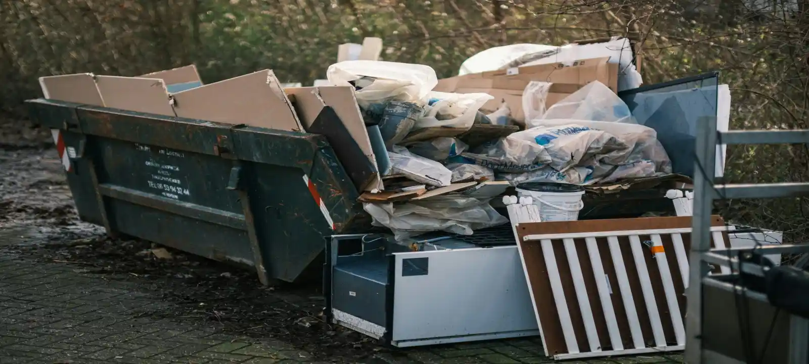
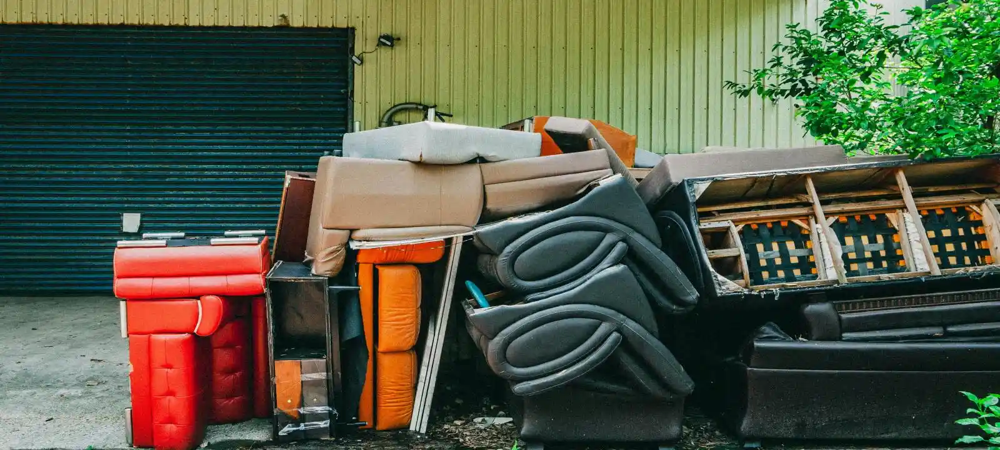

Skip Bin Hire Across Wollongong & Illawarra
We proudly service the entire Wollongong and Illawarra region, delivering skip bins directly to homes, businesses, and construction sites. Whether you are in coastal suburbs, inland residential areas, or industrial zones, we provide fast and reliable skip bin delivery and pickup tailored to your project needs.
Areas We Service
We provide skip bin hire across the entire Wollongong and
Illawarra region, including:
Albion Park, Appin,
Austinmer, Avondale, Balgownie, Barrack Heights, Barrack Point,
Bellambi, Berkeley, Berry, Blackbutt, Bombo, Bowral,
Brownsville, Bulli, Calderwood, Cambewarra, Camden,
Campbelltown, Coalcliff, Coledale, Coniston, Cordeaux Heights,
Corrimal, Cringila, Culburra Beach, Dapto, Dunmore, East
Corrimal, Engadine, Fairy Meadow, Farmborough Heights, Fernhill,
Figtree, Flinders, Gerringong, Gwynneville, Haywards Bay,
Horsley, Jamberoo, Kanahooka, Keiraville, Kembla Grange, Kembla
Heights, Kiama, Kiama Downs, Kiama Heights, Koonawarra, Lake
Heights, Lake Illawarra, Mangerton, Marshall Mount, Minnamurra,
Mittagong, Moss Vale, Mount Keira, Mount Kembla, Mount Ousley,
Mount Pleasant, Mount Saint Thomas, Mount Warrigal, North
Wollongong, Nowra, Oak Flats, Picton, Port Kembla, Primbee,
Russell Vale, Scarborough, Shell Cove, Shellharbour, Tarrawanna,
Thirroul, Towradgi, Tullimbar, Unanderra, Warilla, Warrawong,
West Wollongong, Wilton, Windang, Wollongong, Wombarra,
Wongawilli, Woonona, Yallah.
Skip Bin Services Available in All Areas
No matter where you are located in Wollongong or the surrounding Illawarra region, we provide the same range of skip bin solutions including mini skip bins, green waste bins, domestic bins, construction bins, commercial bins, and industrial waste bins. We help customers choose the right skip bin based on project type, waste volume, and local site conditions.
When You Need Skip Bin Hire in Your Area
Skip bin hire is commonly needed during home renovations, garden cleanups, construction work, moving house, and commercial site clearances. Waste can quickly accumulate in both residential and industrial areas, making it difficult to manage without proper disposal solutions. A skip bin helps keep your site clean, safe, and organised regardless of your location in the Wollongong and Illawarra region.
Why Location Matters for Skip Bin Hire
Different suburbs in Wollongong and Illawarra may have different access conditions, driveway space, street access, or council requirements that affect skip bin delivery and placement. Understanding your location helps ensure the correct bin size and delivery method is chosen. We help customers assess their site conditions in advance to avoid delays, access issues, or incorrect bin placement.

Frequently Asked Questions
How do I choose the right skip bin size for my project in Wollongong suburbs?
Choosing the right skip bin size in Wollongong depends heavily on the type of project you are doing and the suburb you are located in, because access space, driveway size, and waste volume can vary between residential and coastal areas like Dapto, Corrimal, or Shellharbour. Most sizing mistakes happen when homeowners underestimate how much waste a renovation or garden cleanup will produce, especially in larger suburban properties where waste builds up quickly. If the bin is too small, it can overflow and require a second pickup; if it is too large, you may pay for unused capacity. We help customers across Wollongong suburbs assess their real waste volume and recommend the correct bin size before delivery, so the job runs smoothly without delays or extra cost.
Why do skip bin prices differ across Wollongong and Illawarra suburbs?
Skip bin prices across Wollongong and Illawarra suburbs such as Kiama, Unanderra, or Port Kembla can vary due to differences in access conditions, travel distance, and waste processing requirements. For example, construction-heavy areas like Port Kembla often generate heavier waste, while residential suburbs may produce mainly green or household waste, which is cheaper to process. Another key factor is how easily a truck can access your property, especially in tighter streets or sloped driveways common in parts of Wollongong. We help customers understand these local cost factors so they can choose the most efficient and cost-effective skip bin option for their specific suburb.
What happens if I order the wrong skip bin size in Wollongong?
In Wollongong, ordering the wrong skip bin size is a common issue during home renovations in suburbs like Figtree, Fairy Meadow, or Woonona, where waste builds up faster than expected. If the bin is too small, it can overflow and may require an additional collection, increasing both cost and project time. If the bin is too large, customers end up paying for unused space. This usually happens when people estimate waste visually without experience. We help customers avoid this by matching their specific Wollongong project type with the correct bin size before delivery, reducing the risk of delays and extra charges.